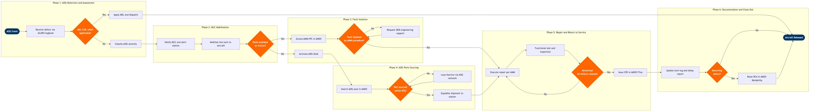

| Step | L4 Step Name | KPI / Target | Pain Point / Risk | Gate |
|---|---|---|---|---|
| 1.1 | Receive AOG defect notification | Defect receipt-to-acknowledgement < 5 minutes | ETL systems at outstations may lack real-time ACARS integration, forcing phone-based defect relay that delays MCC awareness by 10–20 min | |
| 1.2 | Assess defect against MEL / CDL | MEL assessment completed < 15 minutes of defect receipt | MEL revision cycles lag OEM amendments by up to 30 days if airline OpSpec approval is delayed, leaving engineers working from printed fallback copies | ⚠ |
| 1.3 | Apply MEL relief and replan dispatch | MEL-cleared aircraft released within 30 minutes of defect; on-time departure recovery ≥ 85% | Altéa Operations and AMOS operate as separate systems; MEL deferrals must be manually mirrored to flight release, creating risk of dispatching crew without restriction awareness | |
| 2.1 | Classify AOG severity and estimate RTA | AOG classification completed < 10 minutes of MEL decision; RTA estimate accuracy ± 1 hour for 80% of events | RTA estimates at remote outstations with limited history are often optimistic; underestimation cascades into multiple re-protection waves, amplifying passenger disruption costs | |
| 2.2 | Alert station maintenance and mobilise team | First engineer on aircraft within 20 minutes of AOG declaration at main bases; 45 minutes at outstations | Outstations with single contracted line maintenance providers may have engineers committed to concurrent turnarounds, delaying AOG response beyond contractual SLA by 15–30 minutes | |
| 2.3 | Check local parts availability for likely defect | Station first-time fill rate ≥ 60% for top-20 AOG consumable part numbers | Inventory data in AMOS at outstations can be up to 4 hours stale if warehouse staff have not confirmed physical receipts; MCC dispatches engineers expecting parts that are not present | ⚠ |
| 3.1 | Perform initial inspection and fault isolation | Fault isolated within 45 minutes for 90% of LRU-level defects | BITE data on older aircraft variants (e.g. A320 CFM56 legacy FDR) requires cross-referencing paper FIM charts; digital FIM integration with AMOS is not universal across fleet types | |
| 3.2 | Access AMM / IPC repair procedures | Correct AMM revision accessible within 5 minutes; zero deferred task cards performed on superseded revisions | AMM revision synchronisation between OEM publication dates and airline-approved libraries lags by 15–45 days; engineers at outstations may access a local cached version that pre-dates a critical service bulletin | |
| 3.3 | Escalate to OEM engineering support if unresolved | OEM first response < 2 hours (AOG priority); disposition received < 4 hours for 85% of escalations | OEM AOG support SLAs differ by aircraft type and contract tier; low-utilisation carriers on basic support contracts wait up to 8 hours for dispositions, extending AOG duration into multi-day events | ⚠ |
| 4.1 | Activate AOG desk for emergency parts sourcing | AOG PO raised < 15 minutes of parts shortage confirmation; vendor acknowledgement < 1 hour | ILS Partsbase and AMOS purchasing are not natively integrated; coordinators toggle between platforms increasing error risk in part number / revision level transcription | |
| 4.2 | Coordinate cross-fleet loan or borrow with partner airline | Loan agreement confirmed < 2 hours of initial AOG desk activation; traceability documents received before part installation | Loan/borrow transactions require bilateral airworthiness approval (EASA Form 1 or FAA 8130-3); delays in receiving signed release documentation from partner engineers hold up installation even when part is physically available | ⚠ |
| 4.3 | Arrange priority shipment to AOG station | Shipment uplift confirmed < 3 hours of part readiness; ETA accuracy ± 30 minutes for 90% of AOG shipments | Same-day AOG courier capacity from remote OEM/distributor locations is limited; belly-freight dependencies on airline own schedule may add 6–12 hours versus charter courier option, but cost approval thresholds slow decision | |
| 5.1 | Execute repair or LRU replacement per AMM | Task execution time within ± 20% of AMM estimated man-hours for 80% of LRU replacements | Tooling calibration records held in a separate AMOS tooling sub-module are not always linked to the active task card; engineers must manually verify calibration status, adding 10–15 min per specialist tool | |
| 5.2 | Perform functional test and duplicate inspection | Functional test pass rate ≥ 97% first attempt; zero releases without mandatory duplicate inspection where required by AMM | At minimum-staffed outstations only one LAME may be on duty; duplicate inspection requirement cannot be fulfilled locally, forcing a flight-to-base or ferry-for-maintenance decision which adds hours to disruption | ⚠ |
| 5.3 | Issue Certificate of Release to Service (CRS) | CRS issued < 30 minutes of functional test pass; zero CRS issued against open critical defects | AMOS user authorisation matrix must reflect the certifying engineer's current type rating and licence scope; expired or incorrectly scoped authorisations are not always flagged at CRS sign-off, creating a regulatory compliance gap (CAR 145) | |
| 6.1 | Update tech log, delay code, and disruption report | Delay code accuracy ≥ 98% (audited quarterly); disruption report filed within 2 hours of aircraft departure | IATA AHM 780 delay codes for technical events require judgment calls that are inconsistently applied across MCC shifts; downstream performance analytics are therefore unreliable for root cause trending | |
| 6.2 | Trigger reliability review for recurring defect | Recurring defect detection rate ≥ 95% within 3 occurrences; RCA report issued within 10 working days | AMOS reliability trending requires consistent ATA coding across events; MCC coding variance (see step 6.1) means recurring defects are mis-binned into different ATA sub-chapters, masking the recurrence pattern and delaying corrective action | ⚠ |